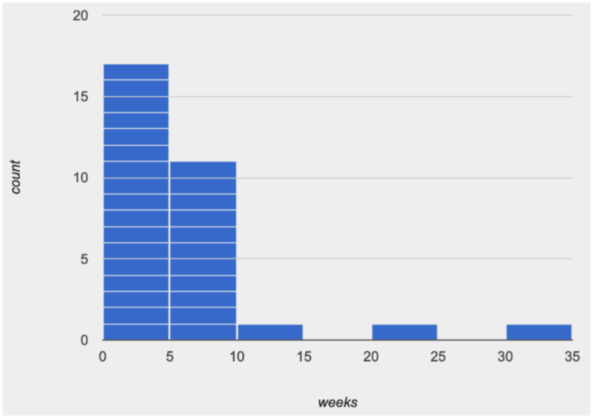
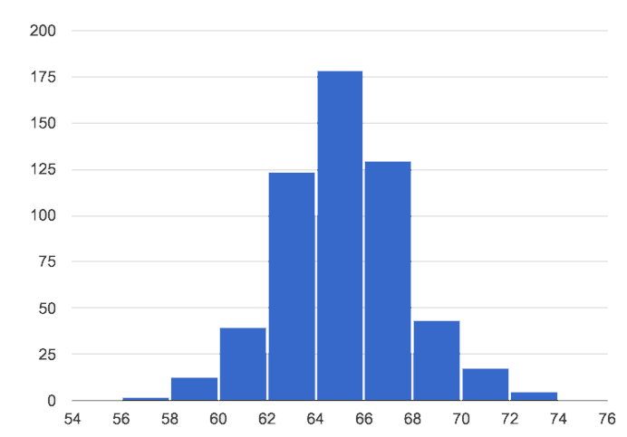
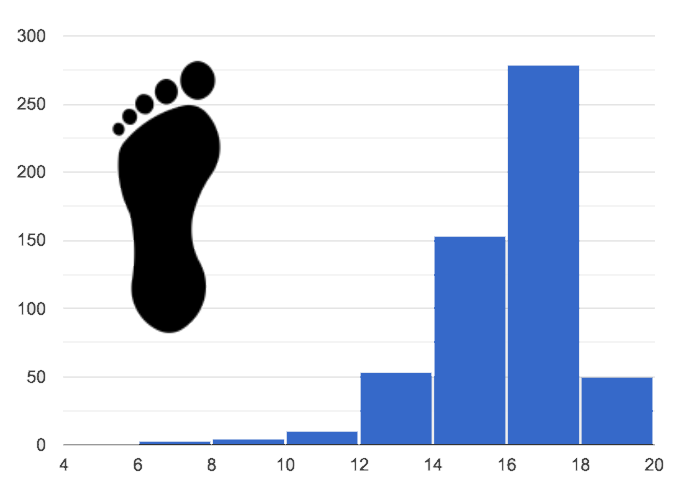
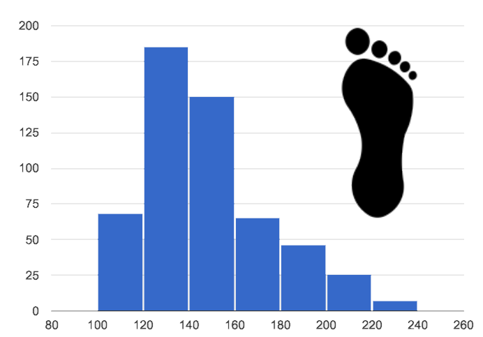
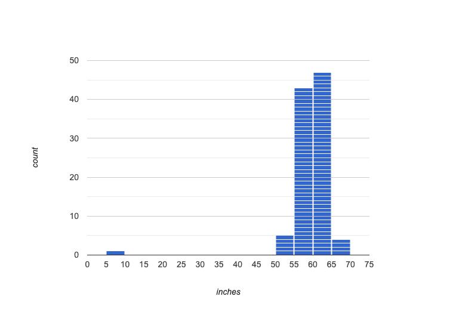
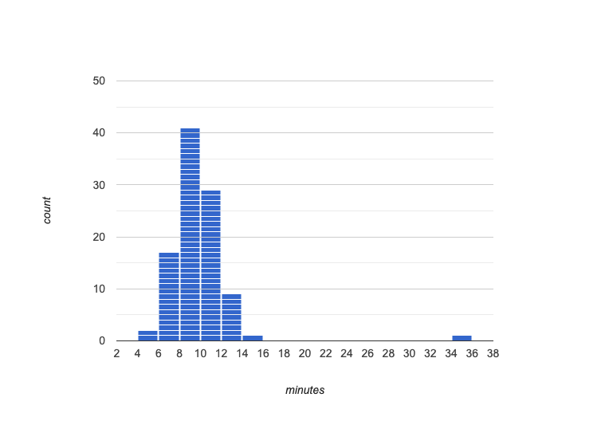

Visualizing the “Shape” of Data
Students explore the concept of "shape", using histograms to determine whether a dataset has skewness, and what the direction of the skewness means. They apply this knowledge to the Animals Dataset, and then to their own.
|
Lesson Goals |
Students will be able to…
|
|
Student-facing Lesson Goals |
|
|
Materials |
|
|
Preparation |
|
average-
a representation of the center, or 'typical' value in a set of numbers, calculated as the sum of those numbers divided by the number of values.
distribution-
a description of the number of times or relative probabilities that different quantities occur in a sample
histogram-
a display of quantitative data that uses vertical bars positioned over bins (sub-intervals); each bar’s height reflects the count or percentage of data values in that bin.
quantitative data-
number values for which arithmetic makes sense
shape-
The aspect of a dataset - visible in a histogram or box plot - that describes which values are more or less common.
skewed left-
A distribution is skewed left if there are a few values that are fairly low compared to the others. A histogram of data that is skewed left will have a clump of taller bars on the right, with smaller ones trailing off to the left, like the shape of the toes on a left foot.
skewed right-
A distribution is skewed right if there are a few values that are fairly high compared to the bulk of data values. A histogram of data that is skewed right will have a clump of taller bars on the left, with smaller ones trailing off to the right, like the shape of the toes on a right foot.
symmetric-
A symmetric distribution has a balanced shape, showing that it’s just as likely for the variable to take lower values as higher values.
| Describing Shape | 30 minutes |
Overview
This activity focuses on describing shape based on a histogram. Students learn about "left skewed", "right skewed", and "symmetric" data, and what those descriptions tell us about a dataset.
Launch
Shape is one way to quickly describe what values are more or less common in a dataset. Some might occur very frequently, while others are rare. This description is a called a distribution, because it shows where data points are clustered together or spread thin. Data Scientists spend a lot of time looking at data displays to examine their shape! If all you look at is the numbers, you lose a lot of insight into your dataset. (This page from Autodesk is a wonderful example!)
Histograms create fixed-size bins, which contain varying numbers of data points.

{kind=link}
We can think of the data being "squeezed" into these fixed bins, like globs of pizza dough being pushed into tubes. When there isn’t much data that fits into a bin, the tube is mostly empty. But when lots of data points fall within a bin, the dough stacks up in the tube. This is why the height of a histogram bar tells us how much data is "squeezed" into that bin!
Consider the image on the right: most of the data points are clustered on the left side, and it contains a few unusually high values way off to the right. But how do we describe this shape, and what does it mean?
Let’s look at some real-world examples of the most common shapes:
1. Symmetric: values are balanced on either side of the middle.

{kind=link}
-
It’s just as likely for a 12yr old to be a certain number of inches below average height as it is to be that number of inches above average height.
-
In a standardized test, most students score fairly close to what’s average. Some students score above average, and just as many score below. The shape is symmetric.
2. Skewed left: low outliers.

{kind=link}
In a distribution that is skewed left, values are clumped around what’s typical, but they trail off to the left with a few unusually low values. Examples:
-
Most adults will have close to a full set of 32 teeth, but a few hockey players might have a very small number of teeth. We won’t get anyone in our dataset who has 10 or 20 extra teeth in their mouths!
-
If the school cafeteria mostly buys canned goods in large commercial sizes, but buys a few items in household sizes, then if we looked at the ounces per can we’d see a shape that has left skewness and/or low outliers.
A skew-left distibution will look like the toes on your left foot!
3. Skewed right, or high outliers.

{kind=link}
In a distribution that is skewed right, values are clumped around what’s typical, but they trail off to the right with a few unusually high values. We see this shape often in the real world, because there are many variables — like “income” or “time spent on the phone” — for which a few individuals have unusually high values, which aren’t balanced out by unusually low values (things like “income” and “phone time” can’t be less than zero). Examples:
-
Age when a woman in the U.S. gives birth would be skewed right or have high outliers. A few women would be much older (40+ years) than the average age of 26 (check the tabloids!), but none of them could be even close to 40 years below average to balance things out!
-
A dataset of earnings almost always shows right skewness or high outliers, because there are usually a few values that are so far above average, they can’t be balanced out by any values that are so far below average. (Earnings can’t be negative.)
A skew-right distibution will look like the toes on your right foot!
Investigate
-
Make a histogram for the pounds column in the animals table, sorting the animals into 20-pound bins.
-
Students should enter the code:
histogram(animals-table, "pounds", 20)
-
-
Would you describe the shape of your histogram as being skewed left, skewed right, or symmetric?
-
The histogram is skewed left.
-
-
Which one of these statements is justified by the histogram’s shape? (1) A few of the animals were unusually light, (2) A few of the animals were unusually heavy, or (3) It was just as likely for an animal to be a certain amount below or above average weight.
-
The statement "a few of the animals were unusually heavy" is the only one that applies, given the histogram’s shape.
-
-
Try bins of 1-pound intervals, then 100-pound intervals. Which of these three histograms best satisfies our rule of thumb?
-
Our rule of thumb is that a histogram should have between 5–10 bins. The first histogram we made - with 20-pound bins - had a total of ten bins, so it best satisfies our rule.
-
-
On Identifying Shape - Histograms, describe the shape of the histograms you see there.
-
On Data Cycle: Shape of the Animals Dataset, describe the pounds histogram and another one you make yourself. When writing down what you notice, try to use the language Data Scientists use, discussing both skew and outliers.
Outliers… do they stay or do they go?

{kind=link}
Suppose we survey the heights of 12 year olds, and almost all values are clustered between 50-70in. There’s a very low outlier, however, at 6in. Is there really a 6in tall 12 year old? Probably not! This could very well be a typo (maybe someone meant to type "60" instead of "6"?). "Junk" data is harmful, because it can drastically change your results!
Suppose we survey the number of minutes it takes for fans to find their seats at a stadium, and almost all values are clustered between 4-16 minutes.

{kind=link}
There’s a very high outlier, however, at 35 minutes. Did it really take someone 35m to find their seat? Well, that’s very possible! Maybe it’s someone who takes a long time getting up stairs, or someone who had to go far out of their way to use the wheelchair ramp!
An outlier can be "junk" data that you need to throw away as part of your analysis, or it could be a really important part of your analysis! As a data scientist, an outlier is a reason to look closer. And whether you decide to keep or remove it from your dataset, make sure you explain your reasons in your write-up!
Turn to Outliers: Should they Stay or Should they Go?, and reflect on whether an outlier should be preserved or removed for analysis.
What Shape Makes Sense? If time allows, here’s a great way to get students walking around and thinking more deeply about distributions! Using flip-chart paper or whiteboard space, designate poster-sized regions around the classroom titled "Symmetric", "Skew Left", and "Skew Right". You may want to have 2-3 of each, depending on the number of students and size of the classroom. Divide the class into teams, such that each group takes a region of the room. Each team looks at the region they’re in front of, and must (a) draw a histogram with that shape and (b) brainstorm a sample that would likely result in that distribution. Once each team has completed the task, the teams rotate to the next poster and brainstorm another sample. They complete this until every team has come up with at least one unique example for symmetric, skew left, and skew right distributions. |
Synthesize
Discuss as a class, making sure students agree on the description of the shape.
Histograms are a powerful way to display a dataset and see its shape. But shape is just one of three key aspects that tell us what’s going on with a quantitative column of a dataset. In the next lessons, we’ll explore the other two: center and spread.
| Your Own Analysis | flexible |
Overview
Students apply what they’ve learned to their own dataset.
Launch
How would you describe the shape of the quantitative columns in your dataset?
Investigate
-
How are the quantitative columns in your dataset distributed?
-
Turn to Data Cycle: Shape of My Dataset, and use the Data Cycle to explore two quantitative columns with histograms.
-
Then add these displays - and your interpretations! - to the "Making Displays" section of your Dataset Exploration.
-
Do these displays bring up any interesting questions? If so, add them to the end of the document.
Synthesize
Share your findings. Were any of them surprising? What, if any, outliers did you discover when making histograms?
These materials were developed partly through support of the National Science Foundation,
(awards 1042210, 1535276, 1648684, and 1738598).  Bootstrap by the Bootstrap Community is licensed under a Creative Commons 4.0 Unported License. This license does not grant permission to run training or professional development. Offering training or professional development with materials substantially derived from Bootstrap must be approved in writing by a Bootstrap Director. Permissions beyond the scope of this license, such as to run training, may be available by contacting contact@BootstrapWorld.org.
Bootstrap by the Bootstrap Community is licensed under a Creative Commons 4.0 Unported License. This license does not grant permission to run training or professional development. Offering training or professional development with materials substantially derived from Bootstrap must be approved in writing by a Bootstrap Director. Permissions beyond the scope of this license, such as to run training, may be available by contacting contact@BootstrapWorld.org.